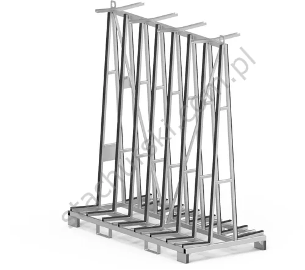

RACKS / 13 MODELS OFFICIAL CATALOGUE FAMILY
Racks
for glass & windows
Storage and transport racks for glass and windows, in practical standard models and made-to-order configurations.
13 MODELS / OPTIONS·STACHURSKI / 1974
— IN THIS RANGE
Models and options in the official range
Product references follow Stachurski’s published catalogue. Confirm current availability and configuration with the team.
S↗
RACKS · PRODUCT FAMILY
Have a model in mind?
Send the model code and your handling requirements to request a tailored quotation.